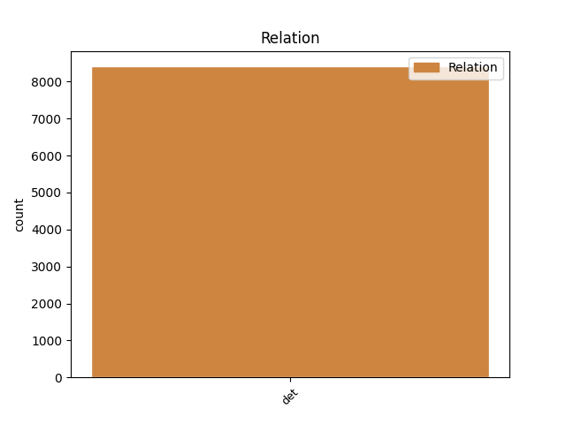
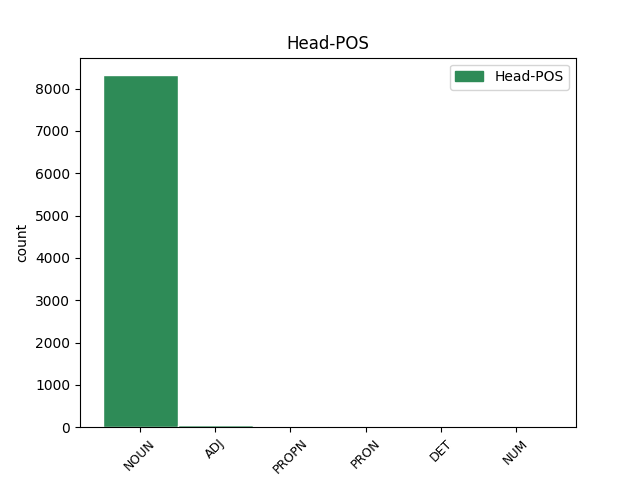
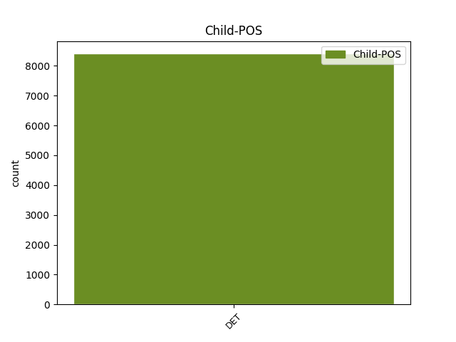

Distribution of features within this leaf



Agreement Rules sorted by frequency.
- When the dependent token is the determiner(det) of the head token, and the head token is NOUN and the dependent token is DET.
1 Prvky _ _ _ _ 0 _ _ _
2 s _ _ _ _ 0 _ _ _
3 jedním _ _ _ _ 0 _ _ _
4 obvodovým _ _ _ _ 0 _ _ _
5 elektronem _ _ _ _ 0 _ _ _
6 tvoří _ _ _ _ 0 _ _ _
7 kladné _ _ _ _ 0 _ _ _
8 jednomocné _ _ _ _ 0 _ _ _
9 ionty _ _ _ _ 0 _ _ _
10 , _ _ _ _ 0 _ _ _
11 které _ _ _ _ 0 _ _ _
12 vzniknou _ _ _ _ 0 _ _ _
13 odtržením _ _ _ _ 0 _ _ _
14 tohoto tento DET PDZS2---------- Case=Gen|Gender=Masc,Neut|Number=Sing|PronType=Dem 15 det _ _
15 elektronu elektron NOUN NNIS2-----A---- Animacy=Inan|Case=Gen|Gender=Masc|Number=Sing|Polarity=Pos 0 _ _ _
16 . _ _ _ _ 0 _ _ _
1 Čistota _ _ _ _ 0 _ _ _
2 ovzduší _ _ _ _ 0 _ _ _
3 bude _ _ _ _ 0 _ _ _
4 čím _ _ _ _ 0 _ _ _
5 dále _ _ _ _ 0 _ _ _
6 tím ten DET PDZS7---------- Case=Ins|Gender=Masc,Neut|Number=Sing|PronType=Dem 7 det _ _
7 důležitějším důležitý ADJ AAIS7----2A---- Animacy=Inan|Case=Ins|Degree=Cmp|Gender=Masc|Number=Sing|Polarity=Pos 0 _ _ _
8 činitelem _ _ _ _ 0 _ _ _
9 , _ _ _ _ 0 _ _ _
10 který _ _ _ _ 0 _ _ _
11 v _ _ _ _ 0 _ _ _
12 některých _ _ _ _ 0 _ _ _
13 případech _ _ _ _ 0 _ _ _
14 může _ _ _ _ 0 _ _ _
15 převýšit _ _ _ _ 0 _ _ _
16 i _ _ _ _ 0 _ _ _
17 hlediska _ _ _ _ 0 _ _ _
18 energetická _ _ _ _ 0 _ _ _
19 . _ _ _ _ 0 _ _ _
1 Současně _ _ _ _ 0 _ _ _
2 týž týž DET PDYS1---------- Case=Nom|Gender=Masc|Number=Sing|PronType=Dem 3 det _ _
3 Popper Popper PROPN NNMS1-----A---- Animacy=Anim|Case=Nom|Gender=Masc|NameType=Sur|Number=Sing|Polarity=Pos 0 _ _ _
4 staví _ _ _ _ 0 _ _ _
5 před _ _ _ _ 0 _ _ _
6 společenskou _ _ _ _ 0 _ _ _
7 vědu _ _ _ _ 0 _ _ _
8 úkol _ _ _ _ 0 _ _ _
9 charakterizovaný _ _ _ _ 0 _ _ _
10 jako _ _ _ _ 0 _ _ _
11 socialengineering _ _ _ _ 0 _ _ _
12 , _ _ _ _ 0 _ _ _
13 sociální _ _ _ _ 0 _ _ _
14 inženýrství _ _ _ _ 0 _ _ _
15 , _ _ _ _ 0 _ _ _
16 který _ _ _ _ 0 _ _ _
17 dokonce _ _ _ _ 0 _ _ _
18 označuje _ _ _ _ 0 _ _ _
19 za _ _ _ _ 0 _ _ _
20 podstatu _ _ _ _ 0 _ _ _
21 její _ _ _ _ 0 _ _ _
22 kritické _ _ _ _ 0 _ _ _
23 funkce _ _ _ _ 0 _ _ _
24 . _ _ _ _ 0 _ _ _
1 To ten DET PDNS1---------- Case=Nom|Gender=Neut|Number=Sing|PronType=Dem 2 det _ _
2 všechno všechno PRON PLNS1---------- Case=Nom|Gender=Neut|Number=Sing|PronType=Tot 0 _ _ _
3 převrací _ _ _ _ 0 _ _ _
4 moderní _ _ _ _ 0 _ _ _
5 vědu _ _ _ _ 0 _ _ _
6 v _ _ _ _ 0 _ _ _
7 jeden _ _ _ _ 0 _ _ _
8 z _ _ _ _ 0 _ _ _
9 nejsložitějších _ _ _ _ 0 _ _ _
10 a _ _ _ _ 0 _ _ _
11 neustále _ _ _ _ 0 _ _ _
12 rostoucích _ _ _ _ 0 _ _ _
13 sociálních _ _ _ _ 0 _ _ _
14 organismů _ _ _ _ 0 _ _ _
15 výrazně _ _ _ _ 0 _ _ _
16 ovlivňujících _ _ _ _ 0 _ _ _
17 rozvoj _ _ _ _ 0 _ _ _
18 lidské _ _ _ _ 0 _ _ _
19 společnosti _ _ _ _ 0 _ _ _
20 . _ _ _ _ 0 _ _ _
1 Některé některý DET PZIP1---------- Animacy=Inan|Case=Nom|Gender=Masc|Number=Plur|PronType=Ind 2 det _ _
2 ty ten DET PDIP1---------- Animacy=Inan|Case=Nom|Gender=Masc|Number=Plur|PronType=Dem 0 _ _ _
3 nejmenší _ _ _ _ 0 _ _ _
4 se _ _ _ _ 0 _ _ _
5 sice _ _ _ _ 0 _ _ _
6 dají _ _ _ _ 0 _ _ _
7 hodit _ _ _ _ 0 _ _ _
8 přes _ _ _ _ 0 _ _ _
9 rameno _ _ _ _ 0 _ _ _
10 a _ _ _ _ 0 _ _ _
11 běžet _ _ _ _ 0 _ _ _
12 s _ _ _ _ 0 _ _ _
13 nimi _ _ _ _ 0 _ _ _
14 , _ _ _ _ 0 _ _ _
15 ty _ _ _ _ 0 _ _ _
16 velké _ _ _ _ 0 _ _ _
17 , _ _ _ _ 0 _ _ _
18 s _ _ _ _ 0 _ _ _
19 těmi _ _ _ _ 0 _ _ _
20 běhají _ _ _ _ 0 _ _ _
21 i _ _ _ _ 0 _ _ _
22 čtyři _ _ _ _ 0 _ _ _
23 muži _ _ _ _ 0 _ _ _
24 . _ _ _ _ 0 _ _ _
1 Kdo _ _ _ _ 0 _ _ _
2 z _ _ _ _ 0 _ _ _
3 těchto tento DET PDXP2---------- Case=Gen|Number=Plur|PronType=Dem 4 det _ _
4 dvou dva NUM ClXP2---------- Case=Gen|Number=Plur|NumForm=Word|NumType=Card|NumValue=1,2,3 0 _ _ _
5 je _ _ _ _ 0 _ _ _
6 kladným _ _ _ _ 0 _ _ _
7 hrdinou _ _ _ _ 0 _ _ _
8 celého _ _ _ _ 0 _ _ _
9 příběhu _ _ _ _ 0 _ _ _
10 . _ _ _ _ 0 _ _ _
Disagree Examples:
1 Zvýšený _ _ _ _ 0 _ _ _
2 tramvajový _ _ _ _ 0 _ _ _
3 pás _ _ _ _ 0 _ _ _
4 smí _ _ _ _ 0 _ _ _
5 přejíždět _ _ _ _ 0 _ _ _
6 jen _ _ _ _ 0 _ _ _
7 v _ _ _ _ 0 _ _ _
8 příčném _ _ _ _ 0 _ _ _
9 směru _ _ _ _ 0 _ _ _
10 , _ _ _ _ 0 _ _ _
11 a _ _ _ _ 0 _ _ _
12 to ten DET PDNS4---------- Case=Acc|Gender=Neut|Number=Sing|PronType=Dem 14 det _ _
13 na _ _ _ _ 0 _ _ _
14 místě místo NOUN NNNS6-----A---- Case=Loc|Gender=Neut|Number=Sing|Polarity=Pos 0 _ _ _
15 k _ _ _ _ 0 _ _ _
16 tomu _ _ _ _ 0 _ _ _
17 přizpůsobeném _ _ _ _ 0 _ _ _
18 . _ _ _ _ 0 _ _ _
1 Uživatel _ _ _ _ 0 _ _ _
2 bytu _ _ _ _ 0 _ _ _
3 je _ _ _ _ 0 _ _ _
4 povinen _ _ _ _ 0 _ _ _
5 platit _ _ _ _ 0 _ _ _
6 úhradu _ _ _ _ 0 _ _ _
7 za _ _ _ _ 0 _ _ _
8 užívání _ _ _ _ 0 _ _ _
9 bytu _ _ _ _ 0 _ _ _
10 a _ _ _ _ 0 _ _ _
11 za _ _ _ _ 0 _ _ _
12 služby _ _ _ _ 0 _ _ _
13 * _ _ _ _ 0 _ _ _
14 zálohy _ _ _ _ 0 _ _ _
15 na _ _ _ _ 0 _ _ _
16 ně _ _ _ _ 0 _ _ _
17 měsíčně _ _ _ _ 0 _ _ _
18 pozadu _ _ _ _ 0 _ _ _
19 , _ _ _ _ 0 _ _ _
20 * _ _ _ _ 0 _ _ _
21 to ten DET PDNS4---------- Case=Acc|Gender=Neut|Number=Sing|PronType=Dem 24 det _ _
22 do _ _ _ _ 0 _ _ _
23 # _ _ _ _ 0 _ _ _
24 dne den NOUN NNIS2-----A---- Animacy=Inan|Case=Gen|Gender=Masc|Number=Sing|Polarity=Pos 0 _ _ _
25 každého _ _ _ _ 0 _ _ _
26 měsíce _ _ _ _ 0 _ _ _
27 za _ _ _ _ 0 _ _ _
28 měsíc _ _ _ _ 0 _ _ _
29 uplynulý _ _ _ _ 0 _ _ _
30 , _ _ _ _ 0 _ _ _
31 nebo _ _ _ _ 0 _ _ _
32 ve _ _ _ _ 0 _ _ _
33 lhůtě _ _ _ _ 0 _ _ _
34 sjednané _ _ _ _ 0 _ _ _
35 s _ _ _ _ 0 _ _ _
36 organizací _ _ _ _ 0 _ _ _
37 spojů _ _ _ _ 0 _ _ _
38 , _ _ _ _ 0 _ _ _
39 jestliže _ _ _ _ 0 _ _ _
40 úhrada _ _ _ _ 0 _ _ _
41 za _ _ _ _ 0 _ _ _
42 užívání _ _ _ _ 0 _ _ _
43 je _ _ _ _ 0 _ _ _
44 součástí _ _ _ _ 0 _ _ _
45 úhrnné _ _ _ _ 0 _ _ _
46 platby _ _ _ _ 0 _ _ _
47 . _ _ _ _ 0 _ _ _
1 Přes _ _ _ _ 0 _ _ _
2 tato _ _ _ _ 0 _ _ _
3 opatření _ _ _ _ 0 _ _ _
4 není _ _ _ _ 0 _ _ _
5 rozepsaná _ _ _ _ 0 _ _ _
6 směrnice _ _ _ _ 0 _ _ _
7 naplňována _ _ _ _ 0 _ _ _
8 a _ _ _ _ 0 _ _ _
9 nejsou _ _ _ _ 0 _ _ _
10 dořešeny _ _ _ _ 0 _ _ _
11 rozvozy _ _ _ _ 0 _ _ _
12 pro _ _ _ _ 0 _ _ _
13 obchod _ _ _ _ 0 _ _ _
14 k _ _ _ _ 0 _ _ _
15 přípravě _ _ _ _ 0 _ _ _
16 kontraktů _ _ _ _ 0 _ _ _
17 na _ _ _ _ 0 _ _ _
18 # _ _ _ _ 0 _ _ _
19 čtvrtletí _ _ _ _ 0 _ _ _
20 , _ _ _ _ 0 _ _ _
21 a _ _ _ _ 0 _ _ _
22 tím ten DET PDZS7---------- Case=Ins|Gender=Masc,Neut|Number=Sing|PronType=Dem 24 det _ _
23 i _ _ _ _ 0 _ _ _
24 přípravě příprava NOUN NNFS3-----A---- Case=Dat|Gender=Fem|Number=Sing|Polarity=Pos 0 _ _ _
25 výrobního _ _ _ _ 0 _ _ _
26 plánu _ _ _ _ 0 _ _ _
27 na _ _ _ _ 0 _ _ _
28 toto _ _ _ _ 0 _ _ _
29 období _ _ _ _ 0 _ _ _
30 . _ _ _ _ 0 _ _ _
1 I _ _ _ _ 0 _ _ _
2 při _ _ _ _ 0 _ _ _
3 naplňování _ _ _ _ 0 _ _ _
4 měsíce _ _ _ _ 0 _ _ _
5 listopadu _ _ _ _ 0 _ _ _
6 dochází _ _ _ _ 0 _ _ _
7 k _ _ _ _ 0 _ _ _
8 potížím _ _ _ _ 0 _ _ _
9 a _ _ _ _ 0 _ _ _
10 zpožďování _ _ _ _ 0 _ _ _
11 pro _ _ _ _ 0 _ _ _
12 jednotlivé _ _ _ _ 0 _ _ _
13 závody _ _ _ _ 0 _ _ _
14 , _ _ _ _ 0 _ _ _
15 a _ _ _ _ 0 _ _ _
16 tím ten DET PDZS7---------- Case=Ins|Gender=Masc,Neut|Number=Sing|PronType=Dem 18 det _ _
17 i _ _ _ _ 0 _ _ _
18 podnik podnik NOUN NNIS4-----A---- Animacy=Inan|Case=Acc|Gender=Masc|Number=Sing|Polarity=Pos 0 _ _ _
19 celkem _ _ _ _ 0 _ _ _
20 . _ _ _ _ 0 _ _ _
1 Různá _ _ _ _ 0 _ _ _
2 dřívější _ _ _ _ 0 _ _ _
3 reorganizační _ _ _ _ 0 _ _ _
4 opatření _ _ _ _ 0 _ _ _
5 směřovala _ _ _ _ 0 _ _ _
6 především _ _ _ _ 0 _ _ _
7 k _ _ _ _ 0 _ _ _
8 posílení _ _ _ _ 0 _ _ _
9 gramatického _ _ _ _ 0 _ _ _
10 oddělení _ _ _ _ 0 _ _ _
11 , _ _ _ _ 0 _ _ _
12 a _ _ _ _ 0 _ _ _
13 tím ten DET PDZS7---------- Case=Ins|Gender=Masc,Neut|Number=Sing|PronType=Dem 15 det _ _
14 i _ _ _ _ 0 _ _ _
15 zajištění zajištění NOUN NNNS3-----A---- Case=Dat|Gender=Neut|Number=Sing|Polarity=Pos 0 _ _ _
16 plnění _ _ _ _ 0 _ _ _
17 programu _ _ _ _ 0 _ _ _
18 , _ _ _ _ 0 _ _ _
19 a _ _ _ _ 0 _ _ _
20 to _ _ _ _ 0 _ _ _
21 částečnými _ _ _ _ 0 _ _ _
22 úvazky _ _ _ _ 0 _ _ _
23 v _ _ _ _ 0 _ _ _
24 oddělení _ _ _ _ 0 _ _ _
25 matematické _ _ _ _ 0 _ _ _
26 lingvistiky _ _ _ _ 0 _ _ _
27 a _ _ _ _ 0 _ _ _
28 lexikologie _ _ _ _ 0 _ _ _
29 , _ _ _ _ 0 _ _ _
30 nově _ _ _ _ 0 _ _ _
31 pracuje _ _ _ _ 0 _ _ _
32 * _ _ _ _ 0 _ _ _
33 Kroupová _ _ _ _ 0 _ _ _
34 na _ _ _ _ 0 _ _ _
35 sémantických _ _ _ _ 0 _ _ _
36 polích _ _ _ _ 0 _ _ _
37 pouze _ _ _ _ 0 _ _ _
38 na _ _ _ _ 0 _ _ _
39 * _ _ _ _ 0 _ _ _
40 na _ _ _ _ 0 _ _ _
41 formální _ _ _ _ 0 _ _ _
42 morfologii _ _ _ _ 0 _ _ _
43 . _ _ _ _ 0 _ _ _